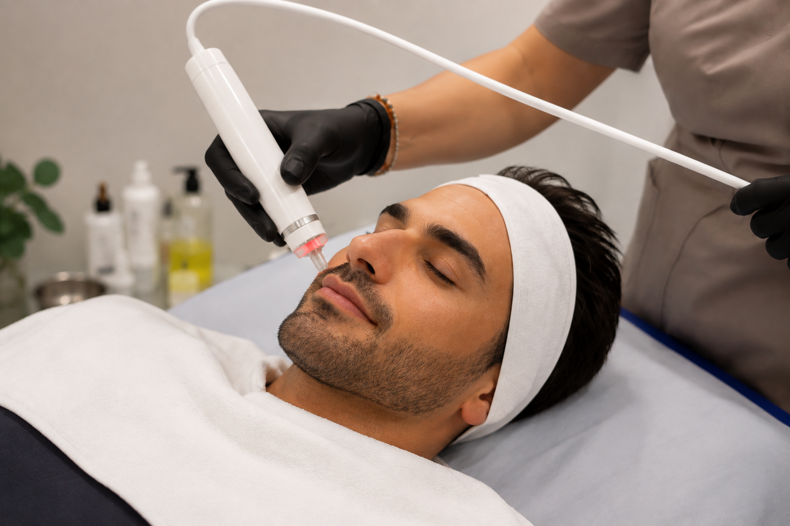
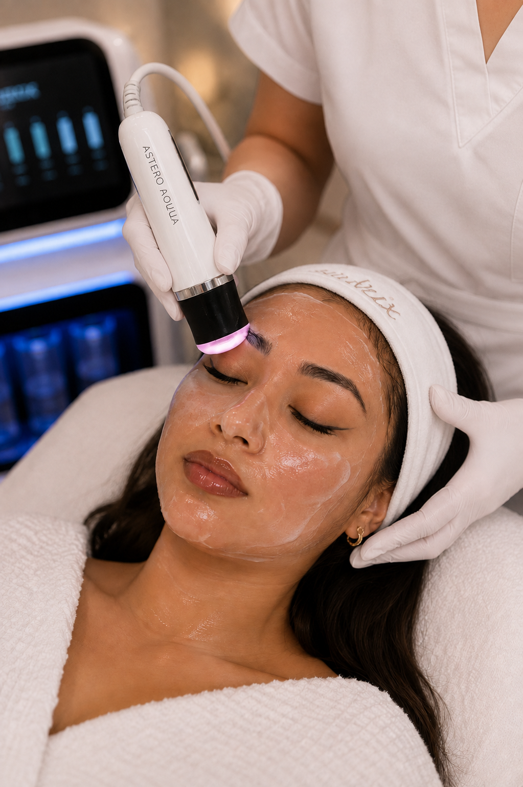

Zachte exfoliatie
Dode huidcellen en oppervlakkige onzuiverheden worden op milde wijze verwijderd om de huid gladder te maken en voor te bereiden op de volgende stappen.

Oxygen Glow Facial combineert een grondige reiniging met verzorging en hydratatie in één behandeling.
Tijdens de behandeling wordt de bovenste huidlaag mild geëxfolieerd. Afhankelijk van het gebruikte oxygenatieprotocol wordt de zuurstoftoevoer in de huid gestimuleerd en worden verzorgende actieve ingrediënten aangebracht.
Het doel is een huid die gladder, frisser en zichtbaar stralender oogt, met een comfortabele en verzorgde finish.
Dode huidcellen en oppervlakkige onzuiverheden worden op milde wijze verwijderd om de huid gladder te maken en voor te bereiden op de volgende stappen.
De behandeling is gericht op het ondersteunen van de zuurstoftoevoer en microcirculatie in de huid, waardoor de teint fris en vitaal kan ogen.
Door exfoliatie en verzorging kan de huid na de behandeling gladder, zachter en stralender ogen.

Iedere behandeling wordt afgestemd op de conditie en behoeften van jouw huid.
We verwijderen make-up, vuil en oppervlakkige onzuiverheden en bereiden de huid voor.
We verwijderen op milde wijze dode huidcellen en verfijnen het huidoppervlak als voorbereiding op de oxygenatiestap.
De oxygenatiestap stimuleert, afhankelijk van het gebruikte systeem, de natuurlijke zuurstoftoevoer en microcirculatie in de huid.
Tijdens de behandeling kunt u kiezen tussen twee krachtige serums: Salmon DNA Gold Ampoule of SkinBooster PDRN EXO. Deze verzorgende formules ondersteunen de hydratatie en huidconditie.
We sluiten af met passende huidverzorging voor een comfortabele, frisse en stralende finish.
Oxygen Glow Facial kan een goede keuze zijn wanneer je huid behoefte heeft aan extra reiniging, hydratatie of een frisse verzorgde uitstraling.
Niet-invasieve behandeltechnieken die exfoliatie combineren met oxygenatie en actieve huidverzorging zijn onderzocht binnen klinische huidstudies.
Klinisch onderzoek naar OxyGeneo onderzocht een niet-invasieve behandeling die mechanische exfoliatie en huidverzorging combineert met oxygenatie via het Bohr-effect.
In een kleine gepubliceerde studie kregen tien deelnemers gedurende acht weken zes OxyGeneo-behandelingen. Veranderingen in onder meer huidtextuur, fijne lijntjes en pigmentatie werden klinisch beoordeeld.
De beschikbare klinische studie rapporteerde verbeteringen in verschillende kenmerken van de huid na een behandelreeks. Omdat de studie klein was, moeten de resultaten voorzichtig worden geïnterpreteerd en zijn ze niet voor iedereen gelijk.
Deze studies hebben betrekking op hydradermabrasion en gerelateerde behandelprotocollen. Resultaten uit wetenschappelijk onderzoek zijn niet automatisch gelijk aan het resultaat van iedere individuele Oxygen Glow Facial-behandeling.